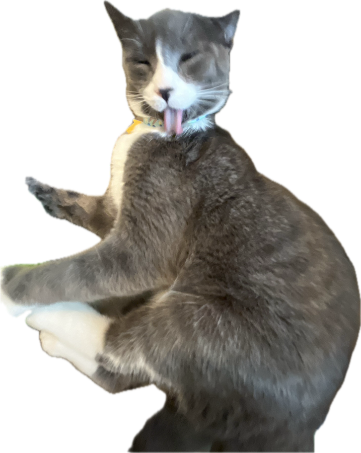
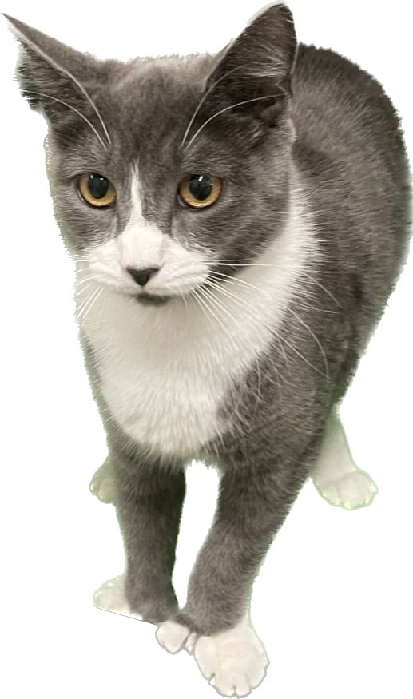
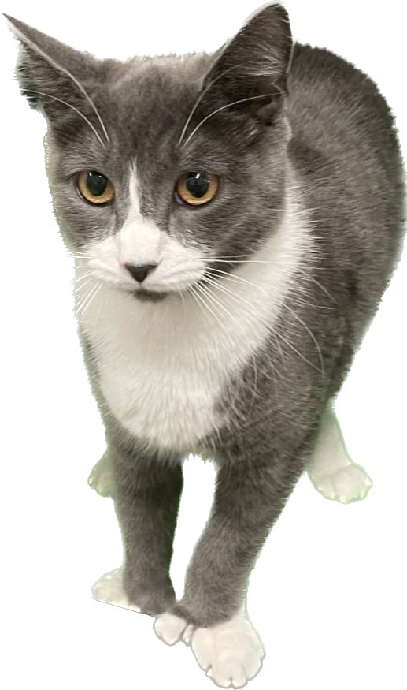
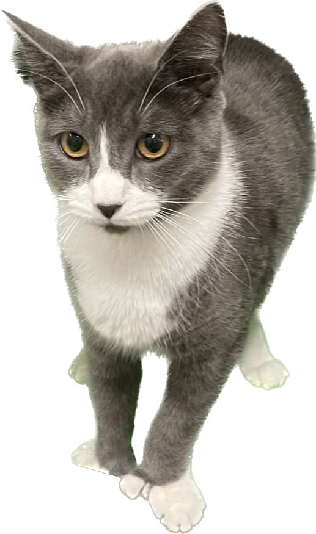

Information about Ivy Bixler
About Me
I am 21 years old and I have a cat named Cecilia. I moved from Raleigh, North Carolina
in the fall of 2022. I love the northeast, unless it's winter! I also enjoy tinkering
with computers. StarTrek TGN was one of my favorite shows growing up and I still watch
from time to time.
Major: Computer Science
Programming lanugages ranked
- C
- Java
- Racket
- HTML CSS JS
- Python
Last term I took operating systems and foundations. This term I'm taking
networks and webware. My favorite classes are os, assembly, and oop.
| Language | Pro | Con |
|---|---|---|
| C | pointers | pointers |
| Java | Arrays.* | Boilerplate |
| Racket | lambdas | ((((()))) |
Experience
- Girls Talk Math @ WPI
cat

 

